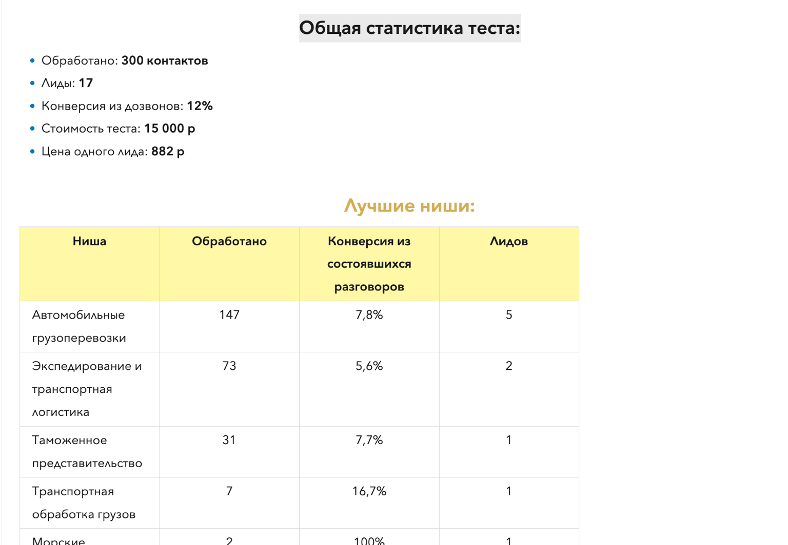
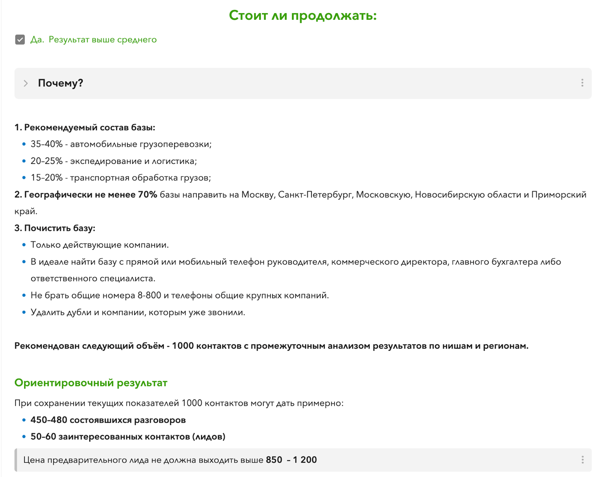

Защитим бюджет в холодном канале: протестируем спрос перед масштабированием
Коммерческий прозвон начинаем с теста на небольшой базе. Реальные разговоры показывают реакцию рынка, конверсию и стоимость целевого лида – и помогают понять, стоит ли запускать большой объём.
Два формата прозвона
Прозвон бывает коммерческим и операционным – и по сути это разные задачи.
Коммерческий прозвон
Ищем новых клиентов по холодной базе: выходим на ЛПР, выясняем потребность, делаем предложение и получаем целевые лиды или договорённости о следующем контакте. Такой прозвон всегда начинаем с теста: сначала проверяем на небольшой выборке, как рынок реагирует на предложение, и только потом решаем, стоит ли вкладываться в больший объём.
Операционный прозвон
Обрабатываем уже готовую базу без поиска новых клиентов: информирование, актуализация контактов, приглашения на мероприятия, опросы. Коммерческий тест здесь обычно не нужен, а стоимость считаем по объёму базы и сложности задачи.
Что показывает тест
Тест нужен не только для подсчёта лидов. По его результатам видно, что повлияло на конверсию: качество базы, сегмент, предложение, скрипт или реакция рынка – и что с этим делать дальше.
Проверяем на небольшой выборке
300 контактов – это не тариф на прозвон 300 контактов, а объём тестовой выборки, на которой уже видны первые закономерности и реальная реакция рынка.
Разбираем результат по частям
Если результат слабый, это ещё не значит, что продукт не востребован: причина может быть в базе, сегменте, предложении, скрипте или самой экономике канала. По одному показателю тест не оцениваю.
Дальше – по обстоятельствам
Если дело в базе, сегменте или сценарии – корректируем их и решаем следующий шаг. Если холодный канал при текущей экономике не имеет смысла – прямо говорю об этом. Если видим рабочую связку – определяем объём и условия масштабирования.
Тест нужен не для того, чтобы продать вам следующие 5 000 контактов. Он нужен, чтобы понять, стоит ли их вообще звонить.
Что входит в тест за 16 000 р.
300 контактов – это объём тестовой выборки, а не тариф на 300 состоявшихся разговоров. Мы проверяем и саму базу: актуальность контактов, реальную дозваниваемость и пригодность для дальнейшей работы – недозвоны и нецелевые номера тоже часть результата.
В тест входит подготовка к запуску, работа с базой 300 контактов, статусы и комментарии по каждому звонку, целевые результаты, если они получены, и итоговая статистика. По мере работы результаты видны в таблице в реальном времени.
Если у вас уже есть скрипт, я посмотрю его и дам точечные рекомендации. Полноценная разработка нового скрипта в стоимость теста не входит – это отдельная услуга.
300 контактов тестовой базы. Обычно 2 рабочих дня, максимум 3.
Рабочая таблица в реальном времени
По каждому контакту в таблице появляются статус, результат звонка и комментарий оператора. Ход теста виден по мере работы, а не только в самом конце.
Пример рабочей таблицы из разных проектов:


Полный аудит базы и стратегия масштабирования
Дальше я прохожу по конкретным пунктам: качество базы, реакция рынка, что стоит изменить и какое решение принять по масштабированию. Всё фиксируется в итоговом отчёте.
Анализ базы и дозваниваемости
Качество контактных данных, фактическая дозваниваемость, состав аудитории, соответствие целевому сегменту и пригодность для дальнейшей работы.
Реакция рынка на предложение
Как аудитория реагирует на вашу гипотезу, где интерес выше, какие возражения встречаются, есть ли спрос в выбранном сегменте.
Рекомендации по улучшению
Что именно нужно изменить: сегмент и качество базы, предложение, скрипт, сценарии отработки возражений, следующие шаги по контакту.
Решение о масштабировании
Три варианта: масштабировать объём, сначала скорректировать гипотезу, базу или скрипт, либо остановиться, если холодный канал сейчас невыгоден.
Так выглядит итоговый отчёт:


Сколько стоит дальнейший прозвон
Итоговую стоимость основного объёма считаю после теста: на нём видны фактическая дозваниваемость, длительность разговоров, сложность сценария и особенности базы. Дальше выбираем одну из моделей и согласовываем её до запуска.
За состоявшийся разговор
от 30 р. за состоявшийся разговор.
Контакт + целевой лид
30-50 р. за контакт + 500-3 000 р. за целевой лид.
Только за целевой лид
2 500-5 000 р. за целевой лид – если экономика проекта это позволяет.
Модель выбираем по результатам теста: важна не сама конверсия, а то, оправдывает ли она себя относительно стоимости лида, среднего чека и маржинальности продажи. Если конверсия ниже 3%, масштабировать прозвон обычно не рекомендую – но решение всегда за вами: тогда работа считается по обычному прайсу за объём базы.
Стоимость снижается на объёме: следующие 300 контактов после тестовых не становятся дешевле автоматически, пересматривать цену имеет смысл от 1 000 контактов.
Операторы звонят. Я веду и контролирую проект.
В команде - до 15 операторов. На конкретный проект ставлю столько людей, сколько требуется под объём и сроки. Операторы выполняют прозвон, фиксируют статусы и комментарии и собирают фактическую реакцию рынка.
Я лично веду проект: контролирую качество, смотрю результаты, разбираю сложные звонки, при необходимости корректирую подход и работу операторов, анализирую причины отказов и экономику теста.
Слышат реакцию
Можно уточнить причину отказа, а не оставить только статус «нет».
Не теряются вне скрипта
Оператор реагирует на неожиданный ответ и задаёт уточняющий вопрос.
Оставляют контекст
В комментариях остаются реальные возражения, интерес, ограничения и следующий шаг.
Иногда и одного лида достаточно
Клиент из ниши с очень высоким чеком хотел прозвонить около 2 000 компаний. Я заранее объяснила, что высокая конверсия здесь маловероятна. Для клиента это было приемлемо: потенциальная сделка могла составлять около 30 млн р., поэтому даже один качественный лид мог сделать прозвон экономически оправданным.
300 контактов. 0 лидов. И тест всё равно выполнил свою задачу.
Клиент открыл прачечную и самостоятельно подготовил базу. Одним из сегментов были парикмахерские и похожие компании. После значимой части теста лидов не было.
Операторы зафиксировали реакции рынка, а я стала разбирать звонки и причины отказов. Выяснилось, что значительная часть сегмента использует одноразовые полотенца – сама потребность в услуге отсутствует. Поменяли гипотезу: вместо парикмахерских взяли бани, сауны и другие организации, которые работают с многоразовым текстилем. Эта аудитория дала другую реакцию – новая гипотеза сработала.
Плохой тест – не тот, где мало лидов. Плохой тест – тот, после которого вы так и не поняли, почему он прошёл плохо.
База и скрипт
Готовая база – таблица с контактами, по которым оператор может сразу звонить; ручной поиск информации перед каждым звонком в стандартную цену не входит. Если базы нет, сбор можно заказать отдельно – от 6 р. за контакт, в зависимости от объёма, источника и критериев поиска.
Если скрипт уже есть, я посмотрю его и дам точечные рекомендации. Разработка нового скрипта – отдельная услуга: логику сценария я собираю сама под продукт, аудиторию и задачу, а в B2B закладываю отдельно разговор с секретарём и выход на ЛПР, поэтому такая разработка трудоёмнее.
Как проходит разработка
Бриф, созвон по продукту и задаче, предоплата 50%, разработка, созвон с презентацией и разбором, правки и оставшиеся 50%.
Цены на разработку
B2B-скрипт – 12 000 р. B2C-скрипт – 6 000 р.
Операционный прозвон без теста
Для готовой базы и задач без проверки новой коммерческой гипотезы можно сразу считать работу по объёму.
Операционный прозвон
Стоимость указана за обработку готовой базы соответствующего объёма, а не за количество состоявшихся разговоров.
Чем больше объём готовой базы и проще сценарий, тем ниже стоимость обработки одного контакта.
Коротко о деталях работы
Тест и база
300 контактов - это 300 дозвонов?
Нет. Это объём тестовой базы. Фактическое количество разговоров зависит от реальной дозваниваемости.
Всегда ли нужен тест?
Нет. Он нужен для проверки новой коммерческой гипотезы. Операционные задачи без проверки продаж обычно можно запускать сразу по объёму.
Сколько длится тест?
Обычно 2 рабочих дня, максимум - 3. Если заказчик создаёт существенную паузу из-за базы, материалов или согласований, проект может быть перенесён, приостановлен или пересчитан.
Можно послушать звонки?
Да, точечно по запросу: лиды, отказы, спорные или интересные разговоры. Массовая выгрузка всех записей в стандартную услугу не входит.
Можно дать базу ссылками на объявления?
Можно, но это уже не готовая база. Если перед звонком нужно открывать ссылку, искать актуальный телефон и изучать объявление, проект рассчитывается отдельно.
Вы доработаете мой скрипт перед тестом?
Посмотрю и дам точечные рекомендации. Полное переписывание или разработка нового скрипта оплачиваются отдельно.
С какими проектами вы не работаете?
Принципиально не занимаюсь холодным массовым обзвоном собственников недвижимости для риелторов и массовыми холодными продажами услуг банкротства физических лиц (BFL). Если ещё до теста видно, что канал в нише системно выжжен или экономика не складывается, я скажу об этом сразу, а не возьму проект только ради счёта.
Стоимость и объёмы
Сколько стоит большой объём?
Для коммерческого прозвона варианты расчёта показаны выше в блоке «Сколько стоит дальнейший прозвон». Для операционного прозвона действуют опубликованные тарифы по объёму готовой базы.
Можно работать только за лид?
Да, такая модель возможна после теста, если экономика проекта позволяет. Конкретная цена определяется по результатам теста и согласовывается до запуска основного объёма.
Есть ли наценка за срочность?
Обычное ускорение за счёт большего количества операторов не означает наценку. Для экстренного проекта, который требует внеплановой перестройки загрузки команды, срочность +50%.
Лиды и дальнейшая работа
Что считается целевым лидом?
Единого определения нет. До запуска согласовываем целевое действие и, при оплате за лид, понятные критерии квалификации.
Целевой лид - это уже готовый купить клиент?
Нет. Это потенциальный клиент, который соответствует согласованным критериям и совершил нужное целевое действие. Закрытие в продажу - следующий этап.
Доводите ли вы лиды до продажи?
В стандартный прозвон это не входит. Повторные касания, переговоры, ведение сделки и доведение до оплаты можно рассчитать как отдельную функцию продаж.
А если у меня некому обрабатывать лиды?
Тогда сначала лучше организовать дальнейшую обработку. Иначе часть результата прозвона будет потеряна.
Отправляете ли вы КП или сообщения после звонка?
В стандартной услуге оператор фиксирует запрос и передаёт его заказчику. Отправку материалов через CRM и рабочие каналы вашей компании можно организовать отдельно.
B2C и юридические вопросы
Работаете с B2C?
Да. Через телефонию ALSTER к базе применяются наши требования. Через телефонию заказчика мы можем предоставить операторов, а ответственность за базу, основания её использования и связанные юридические риски остаются на стороне заказчика. Если своей телефонии нет, её можно подключить и настроить отдельно на вашей стороне.
Что важно учитывать по рекламным звонкам физлицам?
Для рекламных звонков нужно учитывать ст. 18 Федерального закона № 38-ФЗ «О рекламе». Нарушение требований к рекламе по сетям электросвязи может повлечь ответственность по ч. 4.1 ст. 14.3 КоАП РФ; для юридических лиц штраф составляет от 300 000 до 1 000 000 р. Конкретные риски зависят от роли участника и обстоятельств нарушения. Это предупреждение, а не юридическая консультация.
Опишите продукт, базу и задачу
Я посмотрю, нужен ли здесь тест и что стоит подготовить до старта.
Откроется диалог с Ольгой в Telegram.